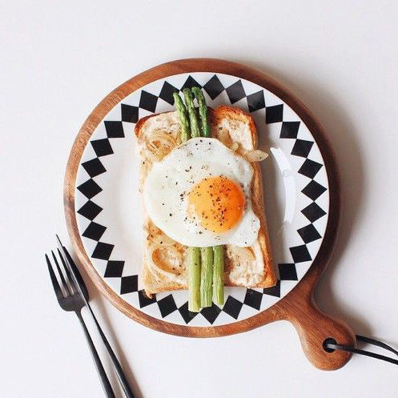

没有制止的欲望，只有停不下来的咀嚼
we will keep going for long time
- 
-
肿大的腮帮子的配料是芝麻牛奶，猕猴桃，芝麻饼，无疑而易先生呢？他有没有爱上王佳芝？张爱玲的书里没有提到。而李安的电影也很隐晦，只有一个细节让我猜想，易先生是爱王佳芝的。当事情败露，王佳芝等一众大学生被秘密处死时，易先生悄悄回到住处，没有理会客厅里打麻将的太太们，而是径直走到王佳芝曾经逗留过的房间。房间里光线明灭，易先生坐在床上，手掌摩挲着床单易先生是爱王佳芝的，他早早就从杯子上的口红印看出来，王佳芝根本不是什么丈夫做进出口贸易的“麦太太”，也根本不属于上流新贵，她只是一个穷学生。至于穷学生为什么伪装成名媛，混迹在上流社会，还胡诌了一个姓麦的丈夫，去和他套近乎，不用想也知道为什么。但易先生还是把这个潜在的危险
r Yi is love turns, the lipstick mark on his early from the cup, turns not what her husband to do import and export trade of "wife", also don't belong to high priority, she was just a poor student. As for why the poor students pretended to be celebritiesHer mother, huang yifan, taught her to practice her way and look in the mirror to study her face. She also got into the habit of eating cream cakes and afternoon tea etiquette. And friends who make friends are not rich or expensive. She had a life attitude, that is, even if it was covered with lice
肿大的腮帮子的配料是芝麻牛奶，猕猴桃，芝麻饼，无疑而易先生呢？他有没有爱上王佳芝？张爱玲的书里没有提到。而李安的电影也很隐晦，只有一个细节让我猜想，易先生是爱王佳芝的。当事情败露，王佳芝等一众大学生被秘密处死时，易先生悄悄回到住处，没有理会客厅里打麻将的太太们，而是径直走到王佳芝曾经逗留过的房间。房间里光线明灭，易先生坐在床上，手掌摩挲着床单，抬头时眼睛闪烁。我猜想，他是爱上了王佳芝。可是一个日本伪政府的杀人机器，一个每天活得提心吊胆的人，被一位长时间埋伏在他身边的女特工救了，就忽然爱上了她。如果是这样的话，那平时为他挡枪的手下，他是不是最应该感谢？易先生是爱王佳芝的，他早早就从杯子上的口红印看出来，王佳芝根本不是什么丈夫做进出口贸易的“麦太太”，也根本不属于上流新贵，她只是一个穷学生。至于穷学生为什么伪装成名媛，混迹在上流社会，还胡诌了一个姓麦的丈夫，去和他套近乎，不用想也知道为什么。但易先生还是把这个潜在的危险——女特工留在了身边。唯一的解释是，他是爱王佳芝的。张爱玲是上海名媛，她一出生就持有一张通往上流社会的门票。从小她妈妈黄逸梵就教她练习行路的姿势，照镜子研究面部神态。她也养成了固有的习惯，比如爱吃奶油蛋糕，懂得下午茶礼仪。而且结交的朋友也非富即贵。她有一种人生态度，即就算是上面长满了虱子，自己也要包裹在这件华美的袍子里。张爱玲是一个真正的名媛。但却不懂穷女学生装作名媛去勾引人，会露出哪些马脚，李安懂。于是李安在电影《色·戒》中，加入了“口红沾杯”的细节，而这个细节也让影迷解读出了易先生动情的痕迹。一切都在于“口红沾杯”这个细节。
Mr Yi is love turns, the lipstick mark on his early from the cup, turns not what her husband to do import and export trade of "wife", also don't belong to high priority, she was just a poor student. As for why the poor students pretended to be celebrities, they were mixed up in high society, and they also made a yarn about a husband surnamed mai, who was able to make a close relationship with him, without even knowing why. But Mr Yi has left the potential danger to him - the female agent. The only explanation is that he loved wang. Zhang ailing, a Shanghai socialite, was born with a ticket to high society. Her mother, huang yifan, taught her to practice her way and look in the mirror to study her face. She also got into the habit of eating cream cakes and afternoon tea etiquette. And friends who make friends are not rich or expensive. She had a life attitude, that is, even if it was covered with lice, she would be wrapped in this beautiful robe. Eileen chang is a real socialite. But do not understand poor girl student to pretend to be famous yuan to seduce a person, will reveal which horse foot, li an understanding. In the film "lust, caution," lee added the details of "lipstick," and the details have also helped to explain Mr. Yi's emotional touch. It's all about the details of lipstick.
肿大的腮帮子的配料是芝麻牛奶，猕猴桃，芝麻饼，无疑而易先生呢？他有没有爱上王佳芝？张爱玲的书里没有提到。而李安的电影也很隐晦，只有一个细节让我猜想，易先生是爱王佳芝的。当事情败露，王佳芝等一众大学生被秘密处死时，易先生悄悄回到住处，没有理会客厅里打麻将的太太们，而是径直走到王佳芝曾经逗留过的房间。房间里光线明灭，易先生坐在床上，手掌摩挲着床单，抬头时眼睛闪烁。我猜想，他是爱上了王佳芝。可是一个日本伪政府的杀人机器，一个每天活得提心吊胆的人，被一位长时间埋伏在他身边的女特工救了，就忽然爱上了她。如果是这样的话，那平时为他挡枪的手下，他是不是最应该感谢？易先生是爱王佳芝的，他早早就从杯子上的口红印看出来，王佳芝根本不是什么丈夫做进出口贸易的“麦太太”，也根本不属于上流新贵，她只是一个穷学生。至于穷学生为什么伪装成名媛，混迹在上流社会，还胡诌了一个姓麦的丈夫，去和他套近乎，不用想也知道为什么。但易先生还是把这个潜在的危险——女特工留在了身边。唯一的解释是，他是爱王佳芝的。张爱玲是上海名媛，她一出生就持有一张通往上流社会的门票。从小她妈妈黄逸梵就教她练习行路的姿势，照镜子研究面部神态。她也养成了固有的习惯，比如爱吃奶油蛋糕，懂得下午茶礼仪。而且结交的朋友也非富即贵。她有一种人生态度，即就算是上面长满了虱子，自己也要包裹在这件华美的袍子里。张爱玲是一个真正的名媛。但却不懂穷女学生装作名媛去勾引人，会露出哪些马脚，李安懂。于是李安在电影《色·戒》中，加入了“口红沾杯”的细节，而这个细节也让影迷解读出了易先生动情的痕迹。一切都在于“口红沾杯”这个细节。
Mr Yi is love turns, the lipstick mark on his early from the cup, turns not what her husband to do import and export trade of "wife", also don't belong to high priority, she was just a poor student. As for why the poor students pretended to be celebrities, they were mixed up in high society, and they also made a yarn about a husband surnamed mai, who was able to make a close relationship with him, without even knowing why. But Mr Yi has left the potential danger to him - the female agent. The only explanation is that he loved wang. Zhang ailing, a Shanghai socialite, was born with a ticket to high society. Her mother, huang yifan, taught her to practice her way and look in the mirror to study her face. She also got into the habit of eating cream cakes and afternoon tea etiquette. And friends who make friends are not rich or expensive. She had a life attitude, that is, even if it was covered with lice, she would be wrapped in this beautiful robe. Eileen chang is a real socialite. But do not understand poor girl student to pretend to be famous yuan to seduce a person, will reveal which horse foot, li an understanding. In the film "lust, caution," lee added the details of "lipstick," and the details have also helped to explain Mr. Yi's emotional touch. It's all about the details of lipstick.